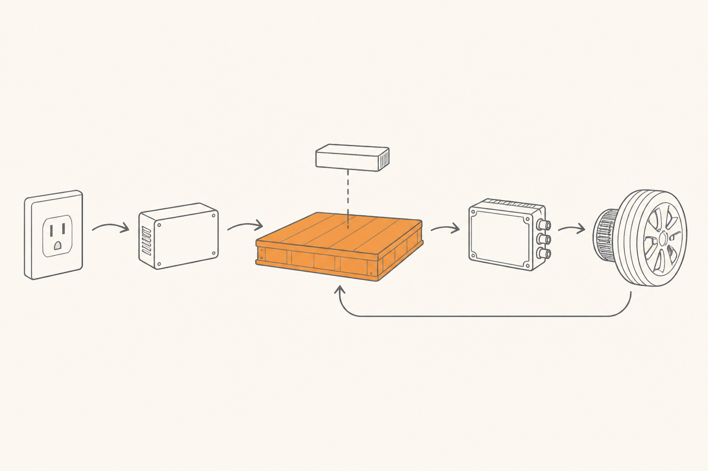

El viaje de un electrón
Antes de meternos en cada componente con detalle, necesitas un mapa del territorio. Esta píldora dibuja el viaje completo de la energía desde el enchufe de la pared hasta que la rueda gira en el asfalto. Solo el plano. Las habitaciones las visitamos una a una en las píldoras siguientes.
El plano completo, en un párrafo
Conectas el coche a un enchufe. La electricidad entra. Si viene del enchufe de tu casa, está en un formato (AC) que la batería no acepta, así que pasa por una pieza llamada cargador a bordo (OBC) que la traduce. Si viene de un cargador rápido público, ya viene traducida. La electricidad llega entonces al pack de baterías, un tablón plano y pesado bajo el suelo del coche, donde se almacena. Mientras está ahí, dos guardianes invisibles la cuidan: el BMS (cerebro electrónico que vigila celda a celda) y el sistema térmico (refrigeración líquida que mantiene la temperatura adecuada). Cuando aprietas el acelerador, esa energía sale del pack, pasa por el inversor (otro traductor), llega al motor y este hace girar las ruedas. Cuando levantas el pie, el motor funciona al revés: actúa como generador, frena el coche y devuelve algo de energía al pack. Eso es frenada regenerativa. Y eso es todo.
Si has leído ese párrafo y has entendido la mitad, perfecto: el resto del curso es desarrollar cada pieza. Si no has entendido nada, aún mejor: a eso venimos.

Las cinco familias de componentes
Si agrupas todo lo que hay en un coche eléctrico relacionado con la energía, sale en cinco familias bien definidas:
1. Almacenamiento. Una sola cosa: el pack de baterías. Es el depósito. Pesa entre 300 y 700 kg. Va plano bajo el suelo del coche, ocupando casi toda su huella. Es lo más caro del coche y lo más importante.
2. Gestión. Dos cosas: el BMS y el sistema térmico. Trabajan juntos para que la batería no se degrade ni se incendie. Son invisibles desde fuera pero sin ellos la batería duraría meses, no años.
3. Transformación. Tres cosas: el cargador a bordo (OBC), el convertidor DC-DC y el inversor. Las tres son piezas de electrónica de potencia que traducen la electricidad de un formato a otro. Imagínalas como tres traductores especializados.
4. Uso. El motor eléctrico. Coge electricidad y la convierte en giro. Hay distintos tipos (síncrono de imanes permanentes, asíncrono de inducción), pero conceptualmente hace lo mismo.
5. Recuperación. El frenado regenerativo, que no es una pieza física separada — es el motor funcionando al revés. Cuando frenas, el motor se convierte en generador y devuelve algo de energía al pack.
Por qué hace falta tanto traductor
Quizá te haya llamado la atención que entre la batería y casi todo lo demás aparezca un traductor. Es la pregunta correcta. La razón es que cada pieza del coche habla un dialecto eléctrico distinto:
El enchufe de casa da AC a 230 V. La batería almacena DC a unos 400 V. El motor necesita AC trifásica (de tres canales desfasados) a un voltaje variable según cuán rápido quieras ir. La radio, las luces, los limpiaparabrisas y demás electrónica accesoria funcionan a DC pero a 12 V — el mismo voltaje que tenía un coche tradicional.
Para que todo conviva, hace falta traducir de un dialecto a otro. El OBC traduce AC del enchufe a DC para la batería. El convertidor DC-DC baja los 400 V de la batería a los 12 V de los accesorios. El inversor convierte DC de la batería a AC trifásica para el motor. Tres traductores, tres direcciones, una sola batería en el centro.
El viaje en frenada
El truco más elegante del coche eléctrico es que el viaje no es de un solo sentido. Cuando aceleras, la energía va de la batería al motor. Cuando levantas el pie del acelerador, ocurre lo contrario: el motor se opone al giro de las ruedas (lo que frena el coche) y esa fuerza de frenado se convierte en electricidad que vuelve a la batería.
Es la misma maquinaria — motor + inversor — funcionando en sentido inverso. Por eso un coche eléctrico bien conducido casi nunca usa los frenos mecánicos en ciudad: el motor hace casi todo el trabajo de frenar y, además, recupera energía. Lo desarrollamos en la píldora 8.
Lo que vas a ir aprendiendo
A partir de aquí, cada píldora se mete en un componente del mapa:
- Píldoras 2 a 5: la batería por dentro y los dos guardianes (BMS + térmica).
- Píldora 6: los tres traductores (OBC, DC-DC, inversor) y los semiconductores que los hacen posibles.
- Píldoras 7 y 8: el motor eléctrico y la frenada regenerativa.
- Píldoras 9 y 10: cargar el coche y por qué algunos cargan más rápido que otros (400V vs 800V).
- Píldoras 11 y 12: lo que viene en los próximos años (estado sólido, sodio-ion, V2G/V2H, megawatt charging).
Si te pierdes en algún momento, vuelve a este mapa. Todo lo demás cuelga de aquí.
FácilNombra los cinco bloques del mapa, en orden, desde el enchufe hasta la rueda.
Enchufe → cargador a bordo (OBC) → pack de baterías → inversor → motor + rueda. Con dos elementos extra: el BMS supervisando la batería y la flecha de regeneración volviendo del motor a la batería.
Fácil¿Por qué hace falta el OBC si el enchufe ya da electricidad?
Porque el enchufe da AC (corriente alterna) y la batería solo acepta DC (corriente continua). El OBC traduce de AC a DC. En carga rápida, esa traducción la hace el cargador exterior y por eso el coche no necesita su OBC; el flujo va directo al pack.
Medio¿Cuál es la única pieza que también funciona "al revés", y qué hace en ese caso?
El motor eléctrico. Cuando recibe electricidad, gira y mueve el coche. Cuando lo obligas a girar (porque el coche tiene inercia y tú levantas el pie del acelerador), produce electricidad y la devuelve al pack. Es la base del frenado regenerativo.
Medio¿Por qué un coche eléctrico tiene un convertidor DC-DC además del OBC y el inversor?
Porque dentro del coche conviven dos voltajes muy distintos: la batería principal (~400 V) y la electrónica accesoria de toda la vida (12 V). Las luces, la radio, los limpiaparabrisas, los elevalunas — todo eso sigue funcionando a 12 V por compatibilidad histórica. El DC-DC baja el voltaje de la batería principal a 12 V para alimentar todo ese ecosistema.